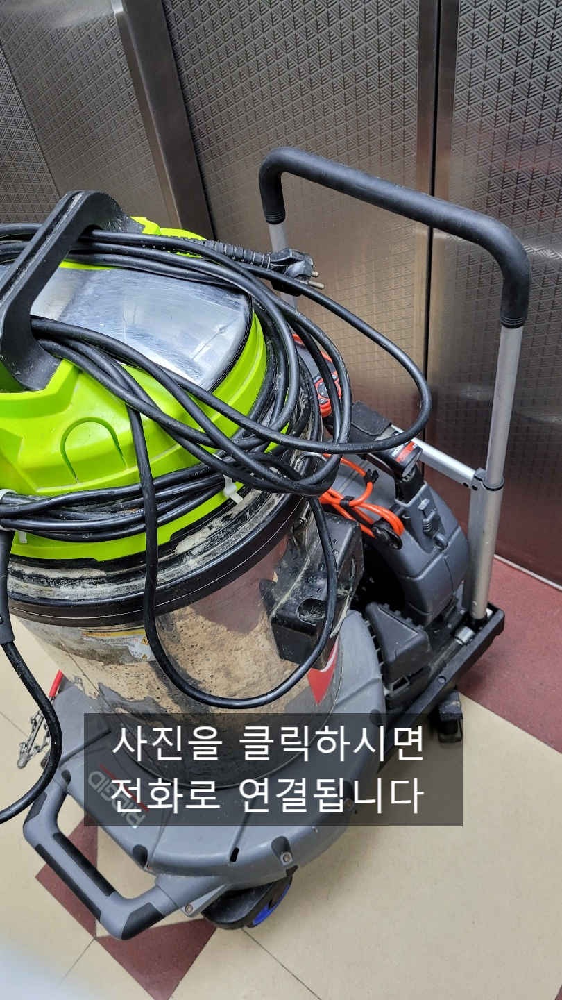
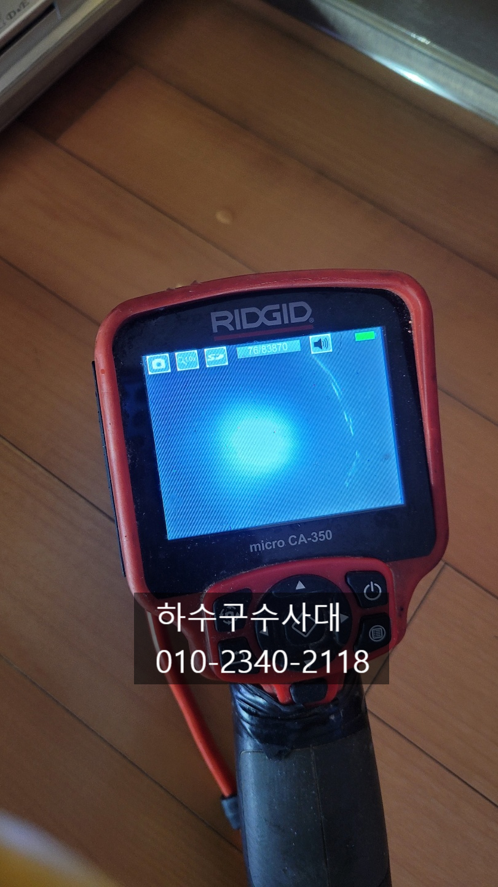
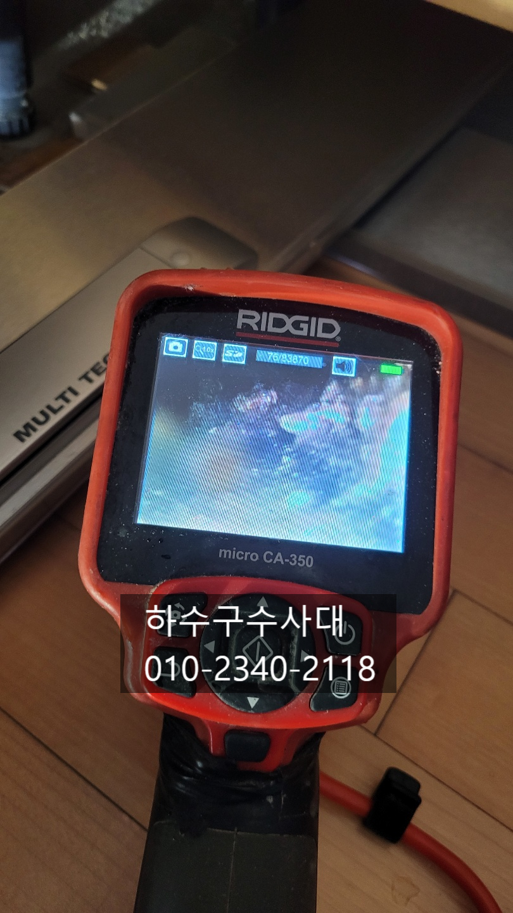
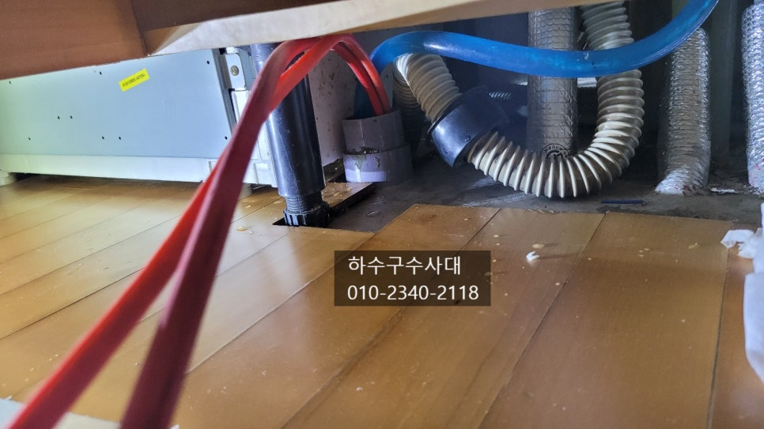
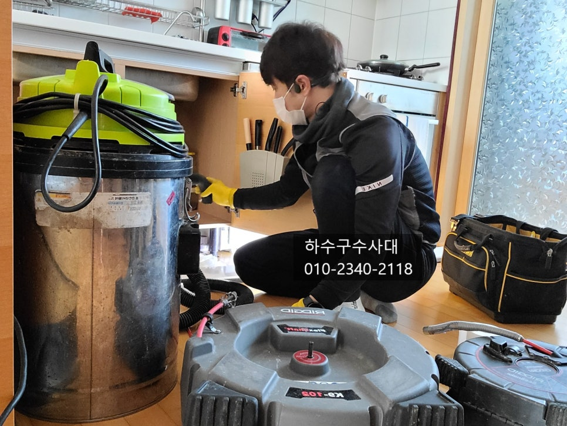
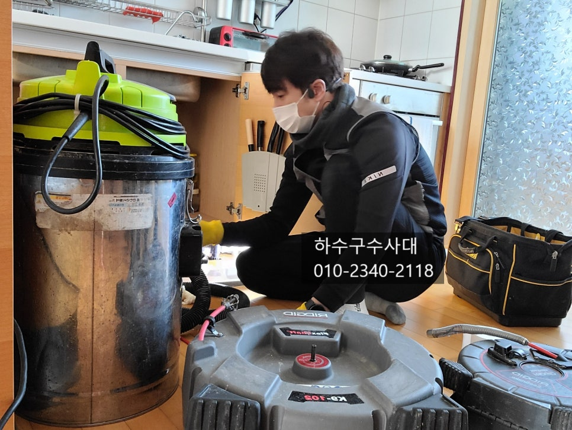
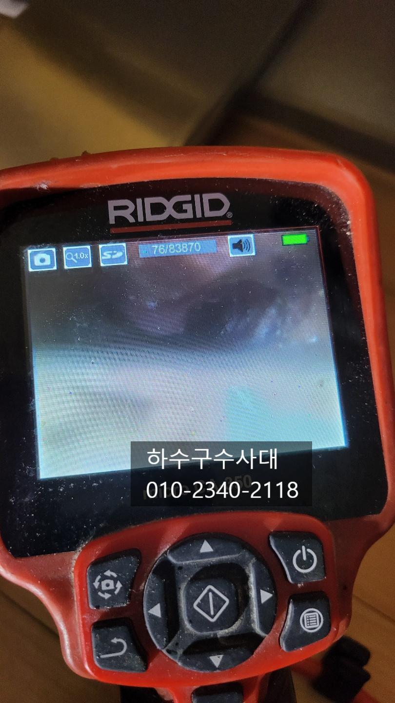

🏠 송탄하수구막힘 송탄싱크대막힘 하수구전문업체
용인 싱크대막힘 전문 시공 후기

📋 작업 개요
- 위치: 용인
- 서비스 유형: 싱크대막힘, 하수구막힘, 배관막힘, 누수수리, 역류해결, 배관청소
- 작업 일시: 2021. 12. 21. 0:05
- 업체명: 하수구수사대 (010-5615-2118)
🔍 문제 상황
송탄하수구막힘 송탄싱크대막힘 하수구전문업체
안녕하세요
"하수구수사대"입니다
우리가 일상적으로 하수구가 막히는 일이 평생
한번 있을까 말까하는데요 살면서 하수구에서 물이 역류하는
일을 겪지못하는 분들이 더 많다고 보시면 됩니다.
오늘은 싱크대하수구가 막혀 물이 역류한 현장을
다녀왔는데요 다행히 역류한곳을 확인하고 물을 쓰지
않으셨다고 합니다. 아파트나 빌라 등 밑에 집이 있는경우
싱크대바닥으로 물이 계속 흘러나올 경우 누수가 생기기 때문에
조심하셔야 합니다.
일시적인 물넘침으로는 누수가 생기지 않으니 걱정안하셔도
되지만 지속적인 물넘침은 누수가 생기니 참고하시길 바랍니다^^
싱크대하수구는 주로 기름때문에 막히는데요
설거지를 하면서 하수구로 들어가는 기름성분이

🔎 원인 분석
💡 전문가 진단: 정밀 진단 장비를 사용하여 슬러지의 고착 여부를 판명하고 타격/세척 작업을 실시했습니다.
배관에 오랜기간 붙어 기름덩어리가 되고 배관이
동맥경화처럼 구멍이 좁아지고 기름덩어리가 무너지면서
막히는게 대부분 많다고 할수 있습니다.
막히게되면 뜨거운물을 틀거나 펑크린 또는 뚜러펑 같은
세정제를 넣기도 하는데 기름덩어리로 막히게되면
오히려 악효과가 나타날수도 있답니다.
기름덩어리 일부가 무너져 조금씩 내려갔던 물조차
내려가지 않는 경우도 많기 때문입니다.
기름덩어리가 배관에 쌓이는이유는 몇가지가 있는데요
구배 즉 기울기가 좋지않아 배관에 물이 고여있어 기름이
제대로 배출되지 않아 쌓이는 경우와 구배가 좋지만
관리를 하지않아 오랜기간 사용한경우 또는 음식물처리기
사용과 관리미숙으로 쌓이는 경우를 예로 들수 있는데요
관리방법은 설거지를 할때 물을 충분히 흘려보내고
한달에 한번쯤은 펑크린을 잠자기전에 하수구에 부어주는것이

🔧 작업 과정
바람직합니다.
하지만 대부분 막히는 경험을 하지 못하기 때문에
보이지않고 막히지도 않은 하수구에 돈을들여 펑크린이나 뚜러펑을
부어주는 사람들은 거의 없는것 같습니다.
솔직히 저도 그러지 않고 있고요^^;
하지만 아파트처럼 공동으로 관리하는 곳은 주기적으로
배관청소를 해주는것이 좋은데요 이유는
다같이 사용하는 공동관이 막히게되면 저층세대로
물이 역류하기 때문입니다. 공동관이 막혀
저층세대로 물이 역류한다면 관리실에서 관리소홀로
막대한 비용을 지불해야하기 때문에 미리미리
청소를 하는곳이 많습니다.
싱크대하수구는 막혔을대 제대로 작업하는걸 추천드는데요
이유는 기름슬러지를 제거하지 않으면 언제 또 막힐지 모르기때문입니다.
하수구전문업체라면 내시경카메라는 필수인데요
하지만 여러가지 설비일을 하는 업체는 고가의 전문적인 장비가
없는곳이 많아 내시경카메라가 있는지 확인을 잘하고 선택하셔야합니다.
작업이 모두끝난후 내시경카메라로 배관을 확인을 해야하기 때문이에요.
하수구배관이 깨끗해진걸 확인하고 싱크대 물을 받아서
한번에 내리는 테스트를 해주는것 또한 중요합니다.
밑에 싱크대호스나 연결부위에서 물이 새어나올수도 있기때문인데요
아무래도 배수통에 오래되면 연결부위에 작은 충격으로도
틈이생겨 물이 새어나올수 있기때문입니다.
오늘 방문한 현장이 그런 상황이였는데요


✅ 작업 완료
싱크대배수통이 오래되다보니 싱크대부속품들이
낡아 새걸로 교체해 드렸답니다.
서비스로 해드렸는데요 말만 잘하셔도 이정도는
서비스 잘받으실수 있답니다^^
"하수구수사대"는 하수구전문업체로
하수구막힘으로 고민중이시라면
언제든지 연락 주시기바랍니다.




⚠️ 베란다 누수 및 방수 관리 방법
- ✅ 비가 많이 올 때 창틀 주변이나 아래층 천장에 얼룩이 생기는지 정기적으로 확인해 보세요.
- ✅ 우수관 주변 실리콘 마감이 들뜨거나 깨진 틈새가 있는지 손상 여부를 수시로 체크하세요.
- ✅ 베란다 바닥 타일의 줄눈(메지)이 소실되면 그 틈으로 물이 침투하여 누수가 유발됩니다.
- ✅ 누수 의심 증상 발견 시 방치하면 아래층 손실이 커지므로 즉시 전문가의 진단을 받으십시오.
💡 핵심 정리
- 확실한 장비 작업(내시경 점검 및 샤프트 스케일링)으로 원인을 뿌리 뽑습니다.
- 작업 후 1년 이내에 동일한 부위 재발 시 100% 무상 A/S 서비스를 보장합니다.
- 서울 · 경기 · 인천 전 지역에 24시간 언제든 긴급 출동할 수 있도록 항시 대기 중입니다.
❓ 자주 묻는 질문 (FAQ)
🚨 용인 싱크대막힘 문제로 고민이신가요?
정확한 원인 진단과 확실한 시공으로 재발 없는 해결을 약속드립니다.
24시간 긴급 출동 | 서울 · 경기 · 인천 전지역 | 1년 내 재발 시 무상 A/S